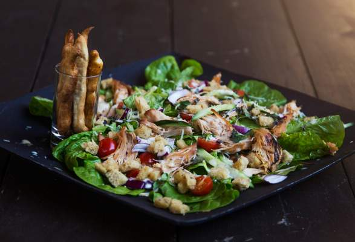
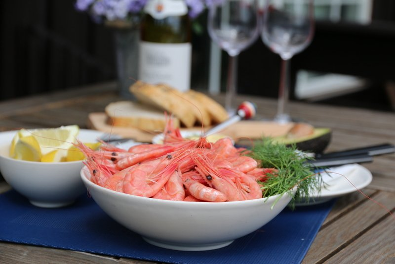
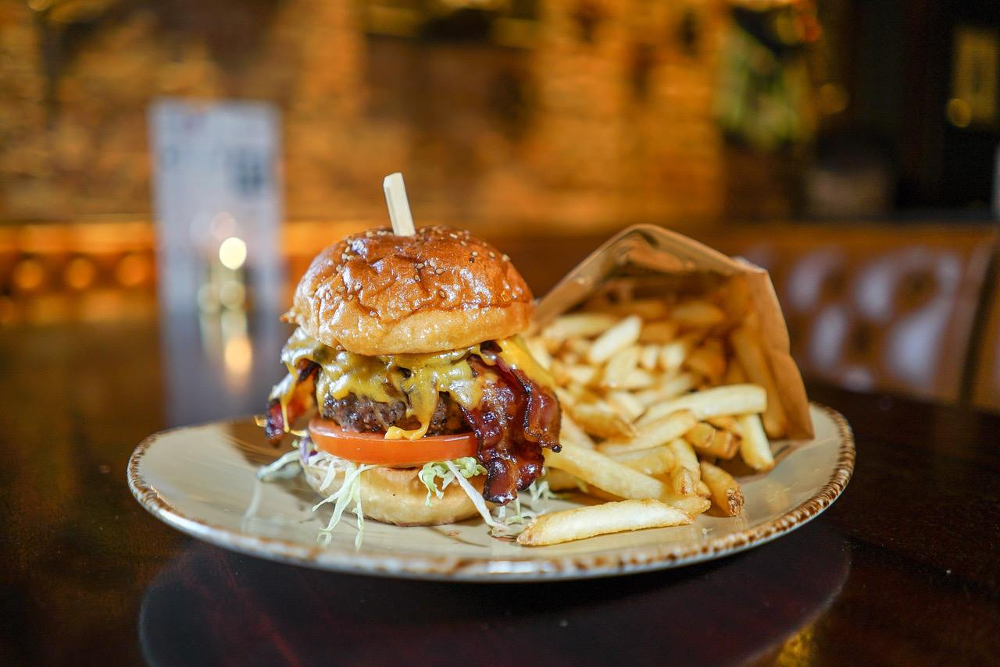
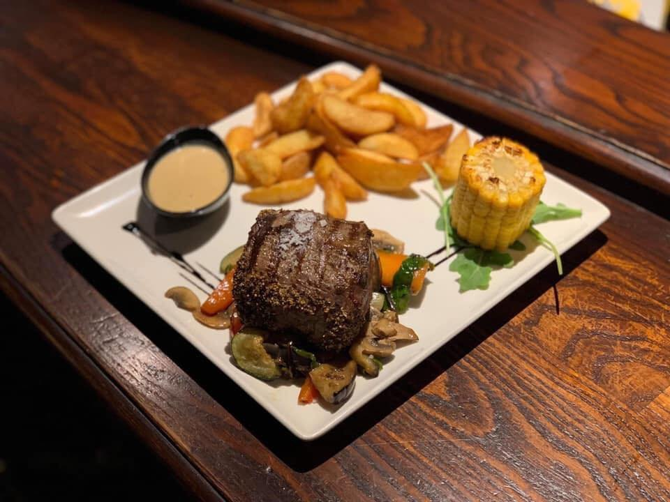
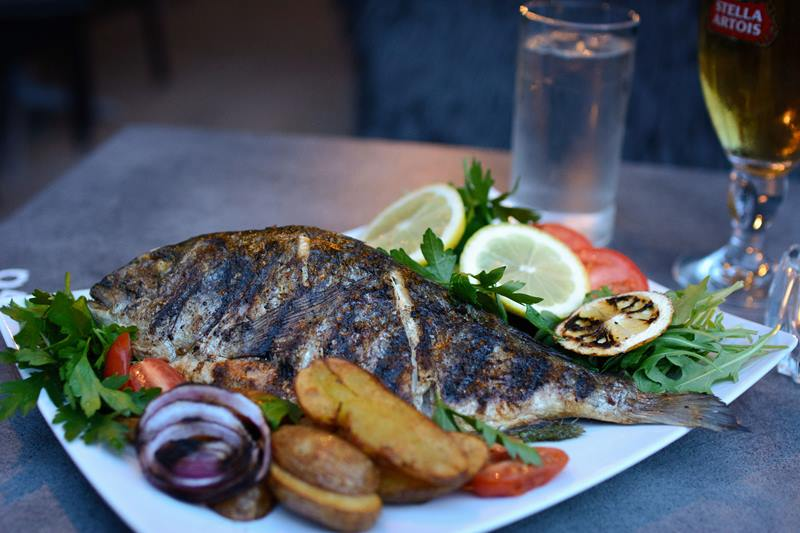
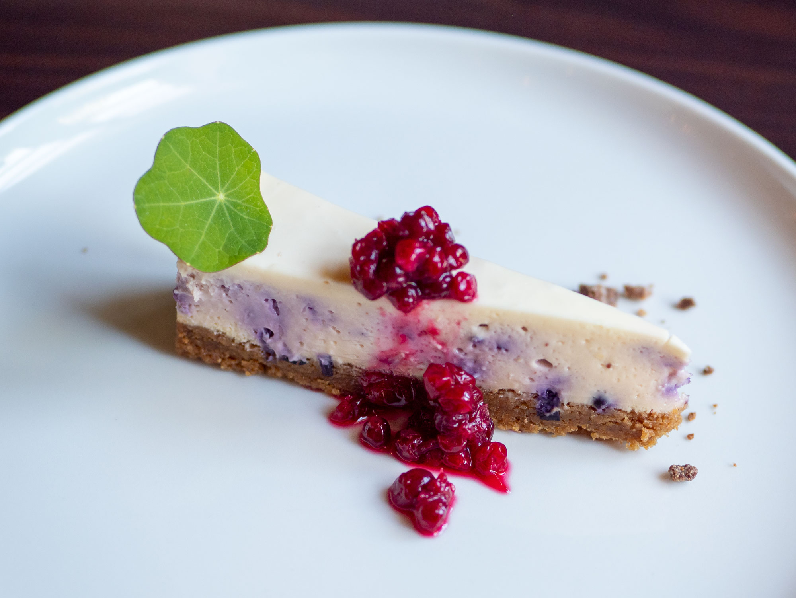

1. Baguetter med smaksrik colombianske hvitløkssmak
Med smør og hvitløk
egg, nøtter, gluten
Pris: 89kr
2. Rolando's kyllingsalat
Med parmesan, ruccola og kylling
Selleri, sesamfrø, egg
Pris: 119kr

3. Ferske Australske reker fra Middelhavet
Serveres med Brød, Aioli og Sitron
Skalldyr, fisk
Pris: 129kr
4. Husets Indrefilet
Med smør, chilisaus og potetbåter
sennep, sesamfrø, nøtter, gluten, melk
Pris: 219kr
5. Korpander's saftige burger
Med bacon, tomat, salat og syltet rødløk. Serveres med fries
gluten, sennep, melk
Pris: 169kr

6. Pepperbiff fra gården
Serveres med Brød, mais, Bearnaise og fries
nøtter, sennep, gluten, melk
Pris: 209kr
7. Stekt fisk med ovnbakte potetbåter
fisk, melk, gluten
Pris: 199kr
8. Friterte bananer med to iskremkuler av valgfri smak
Sjokolade, vanilje, mango eller jordbær
melk, egg
Pris: 89kr
9. Mamma's ostekake
Med iskremkule og jordbær
melk, nøtter, gluten
Pris: 89kr